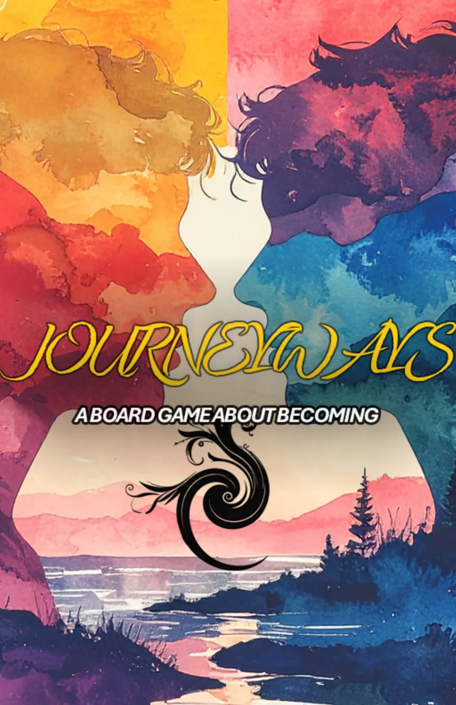
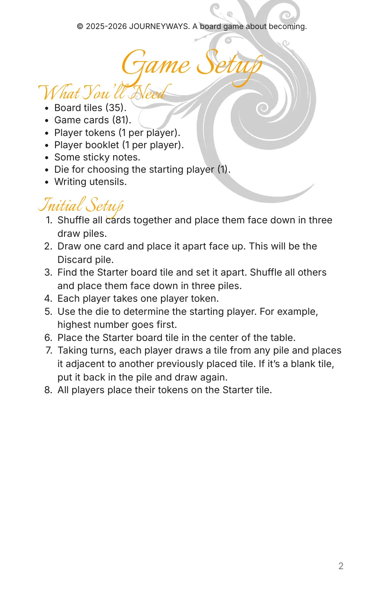
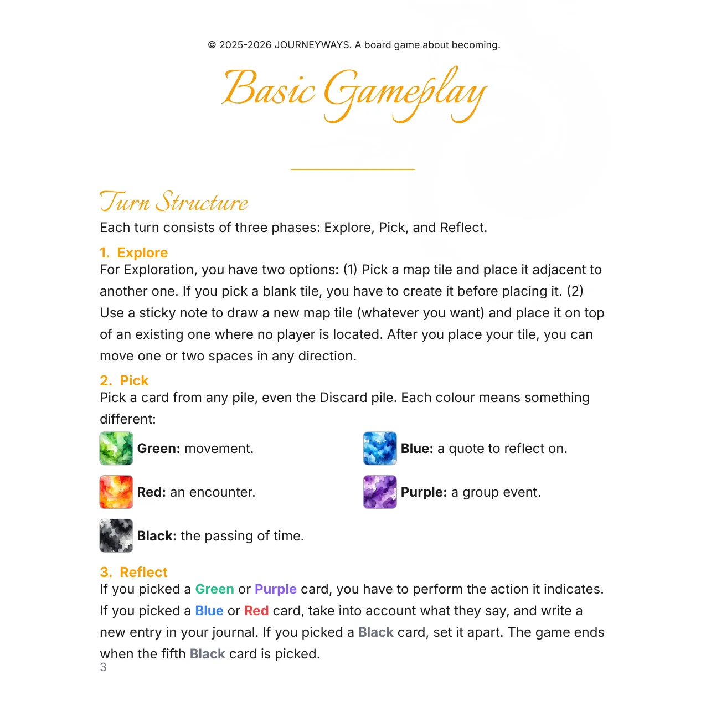
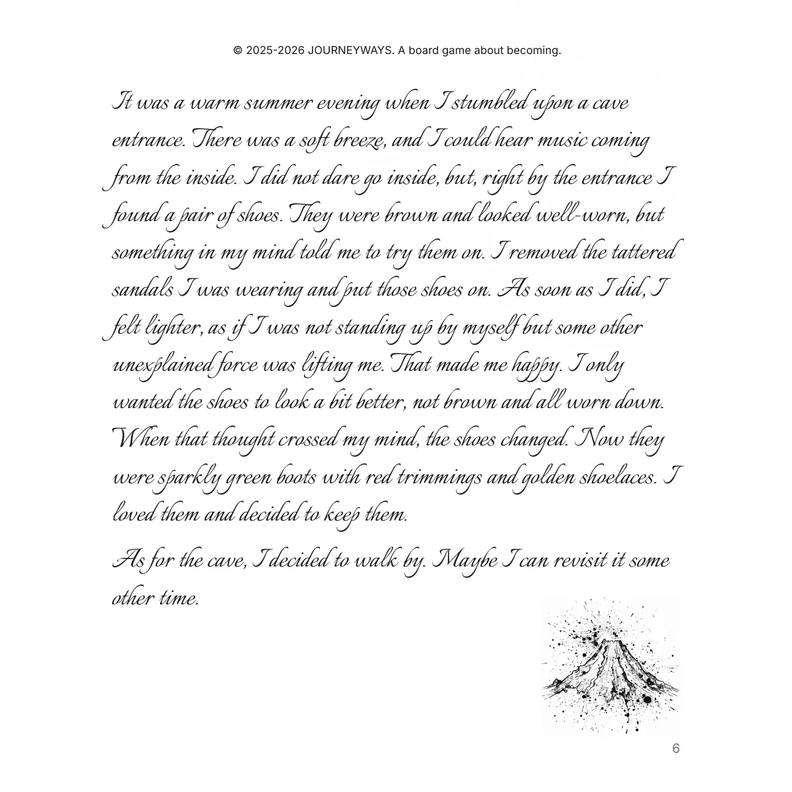
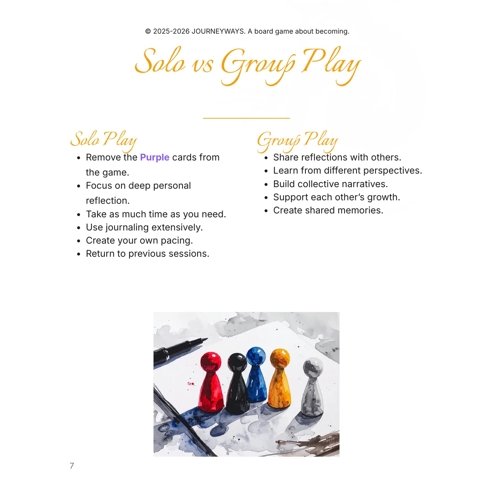

How to set up and play JOURNEYWAYS, solo or in a group: the loose rules, the shape of a turn, and what each of the five card colours means. One copy is included with the game.
Thirteen pages. Pick any page to read it up close.




